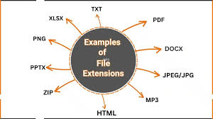

Ekstensi
Ekstensi domain (juga dikenal sebagai Top-Level Domain/TLD) adalah sufiks yang berada di akhir nama domain. Ekstensi ini memberikan petunjuk tentang sifat atau tujuan situs web.
Fungsi-Fungsi
Mengklasifikasikan jenis website (misalnya, komersial, pendidikan, pemerintahan, negara).
Contoh-Contoh
.com (komersial), .org (organisasi), .edu (pendidikan), .go.id (pemerintah Indonesia), .id (Indonesia).
Untuk Informasi Lebih Lanjut kunjungi situs Glints